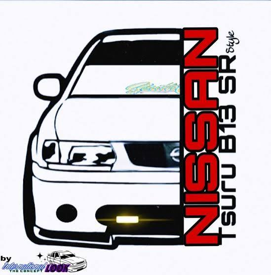

¡Hola!
21 de noviembre
-
Conoce la historia y ficha técnica del Nissan Tsuru GSR 2000
Tendencia ahora
Nissan Tsuru V16
Motor GA16DE 16 válvulas
Tsuru GSR 2000 deportivo
Versiones Tsuru GS1 y GS2
Kit de afinación Nissan Tsuru
Amortiguadores y suspensión Tsuru
Edición Especial Buen Conductor
Plataforma Nissan Sentra B13
Balatas y discos delanteros Tsuru
Encuentro Nacional Club Tsuru